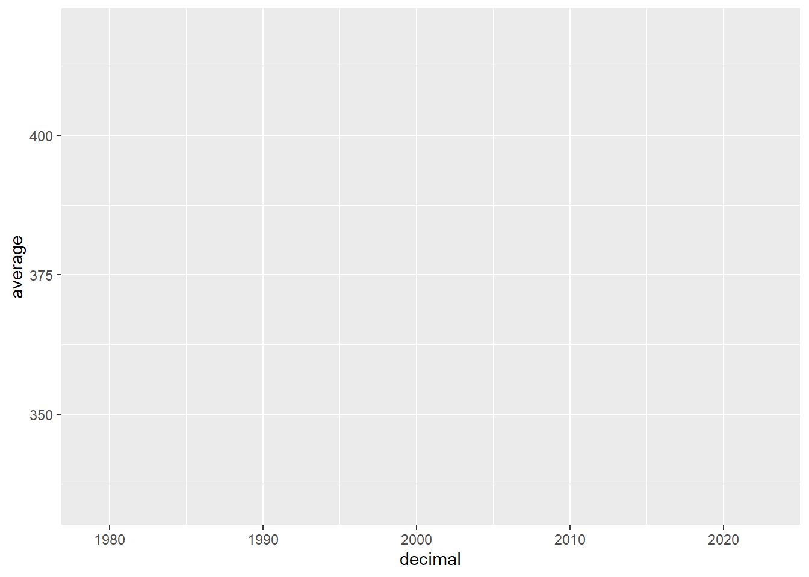

library(tidyverse)
knitr::opts_chunk$set(echo = TRUE, fig.align="center")
options(scipen = 999, pillar.print_max = Inf)
co2 <- read_csv(file = "co2_mm_gl_clean.csv")2. Working with Data
Learning Objectives
- Loading, exploring and saving data
- Learn to manipulate data frames with tidyverse
- Overview of ggplot2 for data visualization
For this session, we will be working with the co2_mm_gl_clean.csv dataset
This data contains monthly globally averaged CO2 records between 1979 and 2022.
Lan, X., Tans, P. and K.W. Thoning: Trends in globally-averaged CO2 determined from NOAA Global Monitoring Laboratory measurements. Version 2023-01 NOAA/GML (https://gml.noaa.gov/ccgg/trends/)
2.1 Data import and export
- package
readrreads txt, csv, Rdata (or rda). - package
havenreads SPSS, Stata, and SAS files. - package
readxlreads excel files (both .xls and .xlsx).
Looking at the data
| co2 | Look at the whole data frame |
|---|---|
| head(co2) | Look at the first few rows |
| tail(co2) | Look at the last few rows |
| colnames(co2) | Names of the columns in the data frame |
| attributes(co2) | Attributes of the data frame |
| dim(co2) | Dimensions of the data frame |
| ncol(co2) | Number of columns |
| nrow(co2) | Number of rows |
| summary(co2) | Summary statistics |
| str(co2) | Structure of the data frame |
str(co2)spc_tbl_ [526 × 5] (S3: spec_tbl_df/tbl_df/tbl/data.frame)
$ year : num [1:526] 1979 1979 1979 1979 1979 ...
$ month : num [1:526] 1 2 3 4 5 6 7 8 9 10 ...
$ decimal: num [1:526] 1979 1979 1979 1979 1979 ...
$ average: num [1:526] 337 337 338 338 338 ...
$ stddev : num [1:526] 0.1 0.09 0.1 0.11 0.04 0.17 0.27 0.29 0.2 0.22 ...
- attr(*, "spec")=
.. cols(
.. year = col_double(),
.. month = col_double(),
.. decimal = col_double(),
.. average = col_double(),
.. stddev = col_double()
.. )
- attr(*, "problems")=<externalptr> summary(co2) year month decimal average
Min. :1979 Min. : 1.000 Min. :1979 Min. :334.4
1st Qu.:1989 1st Qu.: 3.250 1st Qu.:1990 1st Qu.:353.2
Median :2000 Median : 6.000 Median :2001 Median :369.7
Mean :2000 Mean : 6.481 Mean :2001 Mean :372.6
3rd Qu.:2011 3rd Qu.: 9.000 3rd Qu.:2012 3rd Qu.:391.3
Max. :2022 Max. :12.000 Max. :2023 Max. :418.5
stddev
Min. :0.03000
1st Qu.:0.08000
Median :0.10000
Mean :0.09894
3rd Qu.:0.11000
Max. :0.29000 Renaming variables
colnames(co2)[5][1] "stddev"colnames(co2)[5] <- "sd"
colnames(co2)[1] "year" "month" "decimal" "average" "sd" Creating new variables
co2$lowerbound_1sd <- co2$average - 1*co2$sd
co2$upperbound_1sd <- co2$average + 1*co2$sd
head(co2)# A tibble: 6 × 7
year month decimal average sd lowerbound_1sd upperbound_1sd
<dbl> <dbl> <dbl> <dbl> <dbl> <dbl> <dbl>
1 1979 1 1979. 337. 0.1 336. 337.
2 1979 2 1979. 337. 0.09 337. 337.
3 1979 3 1979. 338. 0.1 338. 338.
4 1979 4 1979. 338. 0.11 338. 338.
5 1979 5 1979. 338. 0.04 338. 338.
6 1979 6 1979. 337. 0.17 337. 338.Subsetting data
# extracting data between 2020 and 2022;
co2_2020_2022 <- subset(co2, year >= 2020 & year <=2022)
# subletting directly from dataframe using index;
# try at home;
# co2_2020_2022 <- CO2[CO2year >= 2020 & year <=2022, ] # Select observations with year between 2020 and 2022;- we can export data from r using write function
write.csv(co2, file = 'co2_mm_gl_clean2.csv')2.2 Data manipulation with tidyverse (a crush introduction)
What is the Tidyverse?
The tidyverse consists of a few key packages: - dplyr: data manipulation - ggplot2: data visualization - tibble: tibbles, a modern re-imagining of data frames - tidyr: data tidying - readr: data import - purrr: functional programming, e.g. alternate approaches to apply
Pipe operator
%>%Pipes are operators that send what comes before the pipe to what comes after.
frequently used in tidyverse!
Selecting Columns
- Example: using
%>%to subset dataselect()indplyrsubset columns by namesfilter()subset rows using column values
# selecting columns;
co2 %>%
select(year, month, average) %>%
head()
# drop some variables;
co2 %>%
select(-month) %>%
head()Sometimes, we have a lot of variables to select, and if they have a common naming scheme, this can be very easy.
co2 %>%
select(contains("bound")) %>%
head()- Over helpful functions to be used within
select()- starts_with: starts with a prefix
- ends_with: ends with a suffix
- contains: contains a literal string
- matches: matches a regular expression
- num_range: a numerical range like wk1, wk2, wk3.
select(num_range("wk", 1:3))
- everything: all variables.
selecting rows
# selecting observations in year 2022;
co2 %>%
select(year, month, average) %>%
filter(year == 2022)# A tibble: 10 × 3
year month average
<dbl> <dbl> <dbl>
1 2022 1 417.
2 2022 2 418.
3 2022 3 418.
4 2022 4 418.
5 2022 5 418.
6 2022 6 417.
7 2022 7 416.
8 2022 8 414.
9 2022 9 415.
10 2022 10 416.# selecting observations between 2020 and 2022;
co2 %>%
select(year, month, average) %>%
filter(year <= 2022 & year >= 2020)creating new variables
- Example: using
%>%andmutate()to create new variable
co2 %>%
mutate(lowerbound_2sd = average - 2*sd,
upperbound_2sd = average + 2*sd) %>%
head()# A tibble: 6 × 9
year month decimal average sd lowerbound_1sd upperbound_…¹ lower…² upper…³
<dbl> <dbl> <dbl> <dbl> <dbl> <dbl> <dbl> <dbl> <dbl>
1 1979 1 1979. 337. 0.1 336. 337. 336. 337.
2 1979 2 1979. 337. 0.09 337. 337. 337. 337.
3 1979 3 1979. 338. 0.1 338. 338. 338. 338.
4 1979 4 1979. 338. 0.11 338. 338. 338. 339.
5 1979 5 1979. 338. 0.04 338. 338. 338. 338.
6 1979 6 1979. 337. 0.17 337. 338. 337. 338.
# … with abbreviated variable names ¹upperbound_1sd, ²lowerbound_2sd,
# ³upperbound_2sd# creating new variables based on conditions of another variable;
# suppose we want to create a year group variable;
co2 %>%
mutate(year_group = case_when(
year < 1980 ~ '1970-1979',
1980 <= year & year < 1990 ~ '1980-1989',
1990 <= year & year < 2000 ~ '1990-1999',
2000 <= year & year < 2010 ~ '2000-2009',
2010 <= year & year < 2020 ~ '2010-2019',
2020 <= year & year < 2030 ~ '2020-2029',
)) %>%
head()# A tibble: 6 × 8
year month decimal average sd lowerbound_1sd upperbound_1sd year_group
<dbl> <dbl> <dbl> <dbl> <dbl> <dbl> <dbl> <chr>
1 1979 1 1979. 337. 0.1 336. 337. 1970-1979
2 1979 2 1979. 337. 0.09 337. 337. 1970-1979
3 1979 3 1979. 338. 0.1 338. 338. 1970-1979
4 1979 4 1979. 338. 0.11 338. 338. 1970-1979
5 1979 5 1979. 338. 0.04 338. 338. 1970-1979
6 1979 6 1979. 337. 0.17 337. 338. 1970-1979 co2 <- co2 %>% #updating the data object
mutate(year_group = case_when(
year < 1980 ~ '1970-1979',
1980 <= year & year < 1990 ~ '1980-1989',
1990 <= year & year < 2000 ~ '1990-1999',
2000 <= year & year < 2010 ~ '2000-2009',
2010 <= year & year < 2020 ~ '2010-2019',
2020 <= year & year < 2030 ~ '2020-2029',
))Grouping and Summarizing Data
we can use
group_by()andsummarize()to help calculating group-based statisticsExample: suppose we want to calculate average, min, and max co2 by years (aggregated over month)
co2 %>%
select(year, average) %>%
group_by(year) %>%
summarise(
`mean co2 by month` = mean(average),
`min co2 by month` = min(average),
`max co2 by month` = max(average)
)# A tibble: 44 × 4
year `mean co2 by month` `min co2 by month` `max co2 by month`
<dbl> <dbl> <dbl> <dbl>
1 1979 337. 334. 338.
2 1980 339. 337. 340.
3 1981 340. 338. 342.
4 1982 341. 338. 343.
5 1983 343. 341. 344.
6 1984 344. 342. 345.
7 1985 346. 343. 347.
8 1986 347. 345. 348.
9 1987 349. 347. 350.
10 1988 351. 349. 352.
11 1989 353. 350. 354.
12 1990 354. 352. 356.
13 1991 355. 353. 357.
14 1992 356. 354. 358.
15 1993 357. 354. 358.
16 1994 358. 356. 360.
17 1995 360. 358. 362.
18 1996 362. 360. 363.
19 1997 363. 360. 365.
20 1998 366. 364. 367.
21 1999 368. 365. 369.
22 2000 369. 367. 370.
23 2001 371. 368. 372.
24 2002 373. 370. 374.
25 2003 375. 373. 377.
26 2004 377. 374. 378.
27 2005 379. 377. 381.
28 2006 381. 378. 383.
29 2007 383. 380. 384.
30 2008 385. 383. 387.
31 2009 386. 384. 388.
32 2010 389. 386. 390.
33 2011 391. 388. 392.
34 2012 393. 390. 394.
35 2013 395. 393. 397.
36 2014 397. 395. 399.
37 2015 400. 397. 402.
38 2016 403. 401. 405.
39 2017 405. 403. 407.
40 2018 408. 405. 409.
41 2019 410. 408. 412.
42 2020 412. 410. 414.
43 2021 415. 412. 417.
44 2022 417. 414. 418.we observe an increasing trend of global co2 concenration over years.
Renaming columns
#example syntax;
data %>%
rename(new_name = oldname,
new_name2 = oldname2)Reshaping datasets - wide vs long data
 - pivot function has three argumnets:
- pivot function has three argumnets:
The function requires the following arguments - a data frame (e.g. “wide”) - cols: name of the columns we wish to gather - names_to: name of the new column - values_to: name of the new column containing variable values
- suppose we want to reshape the long co2 data to wide data with month 1 to 12 as columns
co2_wide <- co2 %>%
select(year, month, average) %>%
pivot_wider(names_from = month,
names_prefix = "mth",
values_from = average)
head(co2_wide)# A tibble: 6 × 13
year mth1 mth2 mth3 mth4 mth5 mth6 mth7 mth8 mth9 mth10 mth11 mth12
<dbl> <dbl> <dbl> <dbl> <dbl> <dbl> <dbl> <dbl> <dbl> <dbl> <dbl> <dbl> <dbl>
1 1979 337. 337. 338. 338. 338. 337. 336. 334. 335. 336. 337. 338.
2 1980 339. 339. 340. 340. 340. 340. 338. 337. 337. 338. 339. 340.
3 1981 340. 341. 341. 342. 341. 341. 339. 338. 338. 339. 340. 341.
4 1982 341. 342. 342. 343. 342. 341. 340. 338. 338. 340. 341. 342.
5 1983 342. 343. 343. 344. 344. 344. 342. 341. 341. 342. 343. 343.
6 1984 344. 345. 345. 345. 345. 345. 343. 342. 342. 343. 344. 345 Merging data frames
- we can also join two or multiple data frames together.
- left_join()
- keeps all the entries that are present in the left (first) table and excludes any that are only in the right table
- right_join()
- keeps all the entries that are present in the right table and excludes any that are only in the left table.
- inner_join()
- keeps only the entries that are present in both tables. inner_join is the only function that guarantees you won’t generate any missing entries.
- full_join()
- keeps all of the entries in both tables, regardless of whether or not they appear in the other table.
- left_join()

2.3 Data visualization with ggplot2
 > Data visualization is key to data story telling.
> Data visualization is key to data story telling.
- ggplot2 is a powerful package that enable publication ready plots
- easy customization (over SAS)
- clear syntax and lots of online template
- lots of extensions on style

ggplot components (from Wickham, 2009)
layer is a collection of geometric elements and statistical transformations.
aesthetic(aes) is “something you can see”.
- x, y: variable along the x and y axis
- colour: color of geoms according to data
- fill: the inside color of the geom
- group: what group a geom belongs to
- shape: the figure used to plot a point
- linetype: the type of line used (solid, dashed, etc)
- size: size scaling for an extra dimension
- alpha: the transparency of the geom
geometric elements (geoms), represent what you actually see in the plot: points, lines, polygons, etc.
geom_area()draws an area plotgeom_bar(stat="identity")draws a bar chartgeom_line()draws a linegeom_point()draws a scatterplotgeom_rect(), draws rectangles
scales map values in the data space to values in the aesthetic space.
- This includes the use of colour, shape or size.
- Scales also draw the legend and axes
coordinate(coord), describes how data coordinates
- provides axes and gridlines to help read the graph.
facet specifies how to break up and display subsets of data as small multiples.
theme controls display style, like the font size and background colour.
Layers
ggplot(aes(x = decimal, y = average), data = co2)
Geometry
ggplot(aes(x = decimal, y = average), data = co2)+
geom_point() +
geom_line(color = "blue")
- comparing to the plot provided on https://gml.noaa.gov/ccgg/trends/

Expand To Learn About various geoms
- geom_abline: Reference lines: horizontal, vertical, and diagonal
- geom_area: Ribbons and area plots
- geom_bar: Bar charts
- geom_boxplot: A box and whiskers plot
- geom_contour: 2d contours of a 3d surface
- geom_count: Count overlapping points
- geom_crossbar: Vertical intervals: lines, crossbars & errorbars
- geom_curve: Line segments and curves
- geom_density: Smoothed density estimates
- geom_dotplot: Dot plot
- geom_errorbar: Vertical intervals: lines, crossbars & errorbars
- geom_errorbarh: Horizontal error bars
- geom_freqpoly: Histograms and frequency polygons
- geom_hex: Hexagonal heatmap of 2d bin counts
- geom_histogram: Histograms and frequency polygons
- geom_hline: Reference lines: horizontal, vertical, and diagonal
- geom_jitter: Jittered points
- geom_label: Text
- geom_line: Connect observations
- geom_linerange: Vertical intervals: lines, crossbars & errorbars
- geom_map: Polygons from a reference map
- geom_path: Connect observations
- geom_pointrange: Vertical intervals: lines, crossbars & errorbars
- geom_polygon: Polygons
- geom_qq: A quantile-quantile plot
- geom_qq_line: A quantile-quantile plot
- geom_quantile: Quantile regression
- geom_raster: Rectangles
- geom_ribbon: Ribbons and area plots
- geom_rug: Rug plots in the margins
- geom_segment: Line segments and curves
- geom_smooth: Smoothed conditional means
- geom_step: Connect observations
- geom_text: Text
- geom_tile: Rectangles
- geom_violin: Violin plot
- geom_vline: Reference lines: horizontal, vertical, and diagonal
labs, axis, facet, and theme
ggplot(aes(x = month, y = average), data = co2)+
geom_point(alpha = 0.5) +
geom_line(color = "blue") +
labs(
x = 'Month',
y = 'CO2 mole fraction (ppm)',
title = 'Global Monthly Mean CO2'
) +
scale_x_continuous(breaks = c(1,5,9,12)) +
scale_y_continuous(breaks = seq(from=300,to=450,by=50)) +
facet_wrap(vars(year)) +
theme_bw()
adding statistics
co2 %>%
filter(year == 2021) %>%
ggplot(aes(x = month, y = average))+
geom_point() +
geom_line(color="blue") +
geom_smooth(formula = y ~ x, method = 'lm', color = "red") +
geom_smooth(formula = y ~ splines::bs(x,3), method = 'lm', color = "orange") +
scale_x_continuous(breaks = seq(1,12,1)) +
labs(x = 'Month', y = 'CO2 mole fraction (ppm)', title = 'Global Monthly Mean CO2 in 2021')+
theme_bw()
colours in R
require(RColorBrewer)Loading required package: RColorBrewerdisplay.brewer.all()
Other representative plots
- Boxplot
Suppose we want to look at CO2 distribution by year
ggplot(data = co2, aes(x=year_group, y=average, fill=year_group)) +
geom_boxplot(alpha=0.3) +
scale_fill_brewer(palette="Reds")+
labs(x = 'Year Group',
y = 'CO2 mole fraction (ppm)',
title = 'Global Monthly Mean CO2 by Year Group',
fill = 'Year group')+
theme_bw()
Heatmaps
we are interested to look at the pattern of CO2 concentration by year and month
three data dimensions: year, month, and value of co2
ggplot(data = co2, aes(y=factor(year), x=factor(month), fill=average)) +
geom_tile(colour = "white") +
scale_x_discrete(position = "top") +
scale_fill_distiller(palette = "Reds", direction = 1) +
labs(x = 'Month',
y = 'Year',
title = 'Global Monthly Mean CO2')+
theme_bw()
- The R Graph Gallery, https://r-graph-gallery.com/index.html